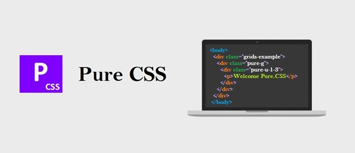

Frameworks
Los frameworks se utilizan en el ámbito de la programación de aplicaciones desde hace décadas. Recientemente han comenzado a utilizarse para programar y diseñar aplicaciones web, por lo que ya existen decenas de frameworks para CSS. Genéricamente, un framework es un conjunto de herramientas, librerías, convenciones y buenas prácticas que pretenden encapsular las tareas repetitivas en módulos genéricos fácilmente reutilizables. De la misma forma, un framework CSS es un conjunto de herramientas, hojas de estilos y buenas prácticas que permiten al diseñador web olvidarse de las tareas repetitivas para centrarse en los elementos únicos de cada diseño en los que puede aportar valor.
¿Qué aporta a un diseñador descubrir en cada diseño que debe neutralizar los estilos por defecto que aplican los navegadores? ¿Qué aporta un diseñador que se dedica continuamente a resolver los mismos problemas que se producen al crear layouts complejos? ¿Por qué el diseñador se dedica a tareas y problemas que han sido resueltos satisfactoriamente hace mucho tiempo? Los frameworks CSS más completos incluyen utilidades para que el diseñador no tenga que trabajar en ningún aspecto genérico del diseño web. Por este motivo, es habitual que los mejores frameworks CSS incluyan herramientas para:
• Neutralizar los estilos por defecto que aplican los navegadores. Se trata de la habitual hoja de estilos reset.css que todos los diseñadores profesionales utilizan.
• Manejar correctamente el texto, de forma que todos los contenidos se vean exactamente igual en todos los navegadores y que sean adaptables para mejorar su accesibilidad y permitir su acceso en cualquier medio y/o dispositivo.
• Crear cualquier estructura compleja o layout de forma sencilla, con la seguridad de que funciona correctamente en cualquier versión de cualquier navegador.
Ventajas que aporta un framework CSS
Las principales ventajas que nos aporta son las siguientes:
• Acelera el desarrollo de las páginas web, ya que conociendo un poco el framework CSS, se pueden desarrollar las páginas de una manera más rápida que si lo hacemos desde cero.
• Facilita el trabajo en equipo, ya que si hemos desarrollado una página y sus estilos usando un framework, si posteriormente otra persona necesita modificarlos y conoce ese framework, puede mantener la misma línea de desarrollo de las hojas de estilo y esa página web.
• Garantiza que todo lo que se desarrolle sea compatible con todos los navegadores, lo que si tuviéramos que hacer nosotros mismos supondría más tiempo y esfuerzo.
• Los frameworks son mantenidos y evolucionados por la comunidad, por lo que los posibles errores son corregidos y sus funciones van ampliándose.
Desventajas de utilizar un framework CSS
A la hora de utilizar un framework no todo son ventaja, ya que hay una serie desventajas que hay que tener en cuenta. Las principales son estas:
• Al emplear un framework estamos utilizando muchos estilos y muchas librerías y no las estamos empleados todas. Este uso de una gran cantidad elementos hace que nuestra página web pese más y tarde más en descargarse.
• Si utilizamos un framework CCS, salvo que lo personalicemos, lo que requiere más conocimientos, nuestra página web se va a parecer mucho a millones de páginas web diferentes que se han hecho con el mismo framework.
• Un framework CSS tiene una curva de aprendizaje, por lo que si queremos utilizarlo primero tenemos que aprender a hacerlo.
• Otra desventaja muy importante, aunque pueda no parecerlo, es que si utilizamos un framework sin haber aprendido CSS, no vamos a saber hacer cualquier modificación sin el framework, ya que vamos a desconocer la base sobre la que funciona.
Los mejores Frameworks CSS responsive
Después de esta introducción vamos con un listado de los mejores frameworks CSS para diseño responsive que consideramos merecen una mención, ya sea por que son los más usados por los diseñadores o por que aportan una característica que los hace especial para un determinado tipo de proyecto. El orden de las librerías no responde a ninguna prioridad.
Bootstrap, el rey del CSS
si hay un framework CSS famoso, ese es Bootstrap. Es quizás el más usado y más demandado en las ofertas de empleo para diseñadores y maquetadores web. Entre sus ventajas incluyen una base muy sólida de usuarios y profesionales usándolo actualmente, al mismo tiempo que incorpora reglas para prácticamente todos los estilos que pueden ser diseñados en una web. Como inconveniente, si no lo sabes usar con cabeza y no filtras bien qué módulos cargar, vas a obligar al usuario a descargarse muchos datos innecesarios. Por eso, antes de ponerlo en producción, es recomendable conocer bien a fondo como funciona este framework y que elementos vamos a usar. Actualmente está casi lista la versión 4, que además de seguir conservando el famoso sistema de columnas y rejillas, añade la posibilidad de incorporar al grid Flexbox, un conjunto de especificaciones CSS relativamente recientes que nos van a dar mucha más flexibilidad y libertad a la hora de maquetar. Muy recomendable
Foundation, avanzado y veterano
Un framework que lleva desde 2011 en la web, y que ha ido mejorando y añadiendo nuevos elementos versión a versión. De hecho, en la versión actual, al igual que sucede con Bootstrap, ya es posible usar Flexbox en su grid. Es una apuesta segura. Además de webs, Foundation tienen otras dos distribuciones para su framework, por un lado para trabajar con emails y otro para trabajar con Apps, con lo que aprovechas por tres el aprendizaje de un framework CSS, abriendo otras vías de diseño

Pure CSS, ligero y rápido
Para los que buscan algo ligero en peso que permita que la web se cargue rápido, Pure CSS es su opción. Es el framework perfecto para montar un proyecto rápido, sin complicaciones y con cierto grado de fiabilidad. Comprimido ocupa menos de 4kb, una maravilla. Buen es cierto que los elementos pueden no ser los más bonitos, personalmente no me convences mucho los estilos de los botones y los forms, pero para gustos colores. Si quieres algo rápido y sin mucha complicación, es una buena opción.
Milligram, minimista hasta en el tamaño
Personalmente es el framework más ingenioso. Solo 2kb cuando se sirve comprimido y unos estilos muy básicos pero con diseño cuidado, muy flat design. Además de esto, resuelve uno de los problemas que más se critica a los grandes Frameworks, la posibilidad de cambiar entre grid de 12 columnas a 10 columnas, e incluso combinar ambas. Como punto en contra, su compatibilidad solo asegura la última versión de los navegadores más usados, así que es posible encontrar comportamientos inesperados en navegadores antiguos. Pero para mantener ese tamaño está más que justificada esa ausencia de compatibilidad. Fantástico

Materialize, framework CSS para material design
Si tu proyecto se basa en un estilo muy concreto como lo es material design, entonces deberías usar este framework, que viene con todo lo necesario para maquetar tu web o app usando las tipografías, cards y estilos recomendados por Google. Un framework muy completo pero con un claro componente de diseño. Muy útil si va a ser Material. Nada útil si no va a ser así.

Skeleton, por lo viejos tiempos!
Aún recuerdo el primer proyecto donde decidimos que era el momento de usar un framework, y el elegido fue skeleton. En ese momento competía codo con codo con los grandes (Bootstrap, Fundation, 960grid…). Tenía un grid muy flexible de 16 columnas y unos estilos base que te permitían una configuración a medida rápida y sin complicaciones. Pero no supo adaptarse al mundo móvil y al responsive: no cambió su filosofía y no incorporó el Mobile first hasta años más tarde. Sus competidores si lo hicieron y muchos abandonamos el barco buscando una alternativa que mejorara el comportamiento en los dispositivos móviles. Además, su rejilla quedó fijada en 960px, cuando Bootstrap ofrecía ya 1200px. Años más tarde este framework sigue vivo, se ha reinventado y cambiado parte de su contenido original. El grid sigue siendo de 960px, pero ya ha incorporado Mobile first y pulido muchos de sus elementos, tales como tipografías, tablas, forms…Una alternativa que nunca está de más tener en mente.